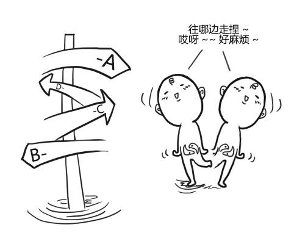

<!DOCTYPE html><html><head><meta charset="utf-8"><title>刚接触编程的小白最容易进入的误区，看看你中了几条？ | 技术学派</title><meta name="viewport" content="width=device-width,initial-scale=1,maximum-scale=1"><meta name="keywords" content="IT培训, Python, 大数据, 人工智能, Web前端, PHP, "><meta name="description" content="每一个程序猿，都会经历一个过程，从一个小白慢慢进化为一名程序猿的过程。在这个过程中，我们一定会踩过无数的坑，在我们刚开始接触到编程的时候，最美妙的事物莫过于bug的出现，而bug的出现，莫过于我们语句的错误，那么，在编程中，我们最容易进入哪些误区呢？1.语句问题及符号错误在刚开始写代码的时候，总是因为一个简简单单的语句问题或者中英文的符号问题而定义错误，其实这个错误是很正常的，每个人刚开始写程序都"><meta property="og:type" content="article"><meta property="og:title" content="刚接触编程的小白最容易进入的误区，看看你中了几条？"><meta property="og:url" content="http://www.JiShuXuePai.com/blog/学习答疑/学习答疑/刚接触编程的小白最容易进入的误区，看看你中了几条？/index.html"><meta property="og:site_name" content="技术学派"><meta property="og:description" content="每一个程序猿，都会经历一个过程，从一个小白慢慢进化为一名程序猿的过程。在这个过程中，我们一定会踩过无数的坑，在我们刚开始接触到编程的时候，最美妙的事物莫过于bug的出现，而bug的出现，莫过于我们语句的错误，那么，在编程中，我们最容易进入哪些误区呢？1.语句问题及符号错误在刚开始写代码的时候，总是因为一个简简单单的语句问题或者中英文的符号问题而定义错误，其实这个错误是很正常的，每个人刚开始写程序都"><meta property="og:locale" content="zh-CN"><meta property="og:image" content="http://www.jishuxuepai.com/blog/学习答疑/学习答疑/刚接触编程的小白最容易进入的误区，看看你中了几条？/01.jpg"><meta property="og:updated_time" content="2018-06-02T09:47:03.000Z"><meta name="twitter:card" content="summary"><meta name="twitter:title" content="刚接触编程的小白最容易进入的误区，看看你中了几条？"><meta name="twitter:description" content="每一个程序猿，都会经历一个过程，从一个小白慢慢进化为一名程序猿的过程。在这个过程中，我们一定会踩过无数的坑，在我们刚开始接触到编程的时候，最美妙的事物莫过于bug的出现，而bug的出现，莫过于我们语句的错误，那么，在编程中，我们最容易进入哪些误区呢？1.语句问题及符号错误在刚开始写代码的时候，总是因为一个简简单单的语句问题或者中英文的符号问题而定义错误，其实这个错误是很正常的，每个人刚开始写程序都"><meta name="twitter:image" content="http://www.jishuxuepai.com/blog/学习答疑/学习答疑/刚接触编程的小白最容易进入的误区，看看你中了几条？/01.jpg"><link rel="stylesheet" href="/libs/bootstrap/bootstrap-grid.css"><link rel="stylesheet" href="/libs/font-awesome/css/font-awesome.min.css"><link rel="stylesheet" href="/libs/titillium-web/styles.css"><link rel="stylesheet" href="/libs/source-code-pro/styles.css"><link rel="stylesheet" href="/css/style.css"><script src="/libs/jquery/jquery.min.js"></script><link rel="stylesheet" href="/libs/lightgallery/css/lightgallery.min.css"><link rel="stylesheet" href="/libs/justified-gallery/justifiedGallery.min.css"><script>var _hmt=_hmt||[];!function(){var e=document.createElement("script");e.src="//hm.baidu.com/hm.js?4c1bd812de3c30edbaa2b803c66f0a04";var t=document.getElementsByTagName("script")[0];t.parentNode.insertBefore(e,t)}()</script></head></html><body><div id="wrap"><header id="header"><div id="header-outer" class="outer"><div class="container"><div class="container-inner"><div id="header-title"><h1 class="logo-wrap"><a href="/" class="logo"></a></h1></div><div id="header-inner" class="nav-container"><a id="main-nav-toggle" class="nav-icon fa fa-bars">菜单</a><div class="nav-container-inner"><ul id="main-nav"><li class="main-nav-list-item"><a class="main-nav-list-link" href="/">主页</a></li><li class="main-nav-list-item"><a class="main-nav-list-link" href="/edu/index.html">学编程</a></li><li class="main-nav-list-item"><a class="main-nav-list-link" href="/blog/">博客</a></li><li class="main-nav-list-item"><a class="main-nav-list-link" href="/tips.html">学习建议</a></li><li class="main-nav-list-item"><a class="main-nav-list-link" href="/about.html">关于</a></li></ul><nav id="sub-nav"><div id="search-form-wrap"><form class="search-form"><input type="text" class="ins-search-input search-form-input" placeholder="搜索"> <button type="submit" class="search-form-submit"></button></form><div class="ins-search"><div class="ins-search-mask"></div><div class="ins-search-container"><div class="ins-input-wrapper"><input type="text" class="ins-search-input" placeholder="想要查找什么..."> <span class="ins-close ins-selectable"><i class="fa fa-times-circle"></i></span></div><div class="ins-section-wrapper"><div class="ins-section-container"></div></div></div></div><script>window.INSIGHT_CONFIG={TRANSLATION:{POSTS:"文章",PAGES:"页面",CATEGORIES:"分类",TAGS:"标签",UNTITLED:"(未命名)"},ROOT_URL:"/",CONTENT_URL:"/content.json"}</script><script src="/js/insight.js"></script></div></nav></div></div></div></div></div></header><div class="container"><div class="main-body container-inner"><div class="main-body-inner"><section id="main"><div class="main-body-header"><h1 class="header"><a class="page-title-link" href="/categories/学习答疑/">学习答疑</a><div class="author">张桐硕</div></h1></div><div class="main-body-content"><article id="post-学习答疑/刚接触编程的小白最容易进入的误区，看看你中了几条？" class="article article-single article-type-post" itemscope itemprop="blogPost"><div class="article-inner"><header class="article-header"><h1 class="article-title" itemprop="name">刚接触编程的小白最容易进入的误区，看看你中了几条？</h1></header><div class="article-meta"><div class="article-date"><a href="/blog/学习答疑/学习答疑/刚接触编程的小白最容易进入的误区，看看你中了几条？/" class="article-date"><time datetime="2018-06-02T09:42:54.985Z" itemprop="datePublished">2018-06-02</time></a></div></div><div class="article-entry" itemprop="articleBody"><p>每一个程序猿，都会经历一个过程，从一个小白慢慢进化为一名程序猿的过程。在这个过程中，我们一定会踩过无数的坑，在我们刚开始接触到编程的时候，最美妙的事物莫过于bug的出现，而bug的出现，莫过于我们语句的错误，那么，在编程中，我们最容易进入哪些误区呢？</p><h3 id="1-语句问题及符号错误"><a href="#1-语句问题及符号错误" class="headerlink" title="1.语句问题及符号错误"></a>1.语句问题及符号错误</h3><p>在刚开始写代码的时候，总是因为一个简简单单的语句问题或者中英文的符号问题而定义错误，其实这个错误是很正常的，每个人刚开始写程序都会遇到，慢慢的多加练习就会好的。只要认真一些，仔细一些，这个阶段很快就会跨过去。</p><p></p><h3 id="2-在编程的过程中只要遇到一个问题，就会牢牢不放，不搞定这个问题，誓不罢休"><a href="#2-在编程的过程中只要遇到一个问题，就会牢牢不放，不搞定这个问题，誓不罢休" class="headerlink" title="2.在编程的过程中只要遇到一个问题，就会牢牢不放，不搞定这个问题，誓不罢休"></a>2.在编程的过程中只要遇到一个问题，就会牢牢不放，不搞定这个问题，誓不罢休</h3><p>其实作为一个初学者来说，有这么强大的学习韧劲是对的，但这也正是大多初学者最容易走的弯路，因为刚接触编程，好多东西并非可以通过短暂的查阅、研究就可以弄明白的。上来就寻根问底，会让自己变得疲惫不堪，因为初学小白开始很难具备强大的编程基础，很难把每个知识点都吃的相当透彻，这样做也会在刚开始的学习过程中浪费大量时间，并且还会对学习信心上带来很大负担，会认为编程太难学了。所以开始学习的时候，先了解基本的方向和思路，掌握一些概念或者工具如何使用，然后根据资料先把案例做出来。学习非一日之功，重在循序渐进，随着知识层次的提升，内在的东西就会慢慢掌握，知识系统也就会随之建立起来。</p><p></p><h3 id="3-在决定学习一门语言的时候，一直怀疑所学语言到底能不能找到工作，为此中间换了好几种语言"><a href="#3-在决定学习一门语言的时候，一直怀疑所学语言到底能不能找到工作，为此中间换了好几种语言" class="headerlink" title="3.在决定学习一门语言的时候，一直怀疑所学语言到底能不能找到工作，为此中间换了好几种语言"></a>3.在决定学习一门语言的时候，一直怀疑所学语言到底能不能找到工作，为此中间换了好几种语言</h3><p>初学者最喜欢问的一句话“我学的XX语言，到底能不能找到工作”，其实这是一个辩证问题，小编觉得任何一门编程语言只要它还活着，那么就有它存在的必要性。编程语言和语言没啥大的区别，只要学会了任何一门再去学习别的语言都会轻车熟路，简单来说，编程思想是想通的。既然已经花了很多时间在一种语言上学习，就索性学习到底，彻底了解这门语言的属性，学好一门了，也就比较容易做到触类旁通。</p><p></p><h3 id="4-在学习过程中可以写出大量的代码，但是排错能力非常差"><a href="#4-在学习过程中可以写出大量的代码，但是排错能力非常差" class="headerlink" title="4.在学习过程中可以写出大量的代码，但是排错能力非常差"></a>4.在学习过程中可以写出大量的代码，但是排错能力非常差</h3><p>初学者最开始的学习方法都是以模仿开始，当代码写完之后，却发现出错了，但怎么看都没问题，最后花费大量的时间才发现了一个非常弱智的问题。初学者出现这种情况是很正常的，但不要养成一个不好的习惯，一旦出现错误，就去找朋友帮助，其实大家很难有这么多的时间和耐心帮着去分析问题和排错的，因为编程语言的变化形式太多，组合方式也是层出不穷，大段的代码很难一眼就找到问题所在。这个时候就需要写代码的人具备debug调试能力，因为在工作中遇到的代码比平常练习的代码复杂程度要多太多，这种情况下很难通过看直接找到问题的根结所在，就需要通过一种手段不断的思考问题出在哪，怎么去解决。基本上能具备完善的调试能力的小伙伴，理论上能独立完成一些小项目的调试，慢慢在向真正的软件工程师迈进了。</p><p></p><h3 id="5-学习时看视频看的很懂，一旦关了视频，大脑一片空白"><a href="#5-学习时看视频看的很懂，一旦关了视频，大脑一片空白" class="headerlink" title="5.学习时看视频看的很懂，一旦关了视频，大脑一片空白"></a>5.学习时看视频看的很懂，一旦关了视频，大脑一片空白</h3><p>现在在线视频教程多如牛毛，学习起来比10年前只靠看书方便了太多，很多小伙伴看视频的时候对于里面代码的一些含义都能了解的很彻底，一旦脱离了视频独立写程序的时候，觉得无从下手，典型的实践操作太少，看视频学习编程这个方法没啥问题，但是需要在看的时候，把里面对应的代码在自己的编译器上都敲很多遍，视频讲的再好也只是别人咀嚼好的，看起来很美，但是需要自己在电脑上大量的实践，才能转化为自己的东西，才能纳入自己的知识体系中。</p><p></p></div><footer class="article-footer"><a data-url="http://www.JiShuXuePai.com/blog/学习答疑/学习答疑/刚接触编程的小白最容易进入的误区，看看你中了几条？/" data-id="cjhzkedjm0000m696qkvhx7wj" class="article-share-link"><i class="fa fa-share"></i>分享到</a><script>!function(n){n("body").on("click",function(){n(".article-share-box.on").removeClass("on")}).on("click",".article-share-link",function(t){t.stopPropagation();var e,a=n(this),o=a.attr("data-url"),r=encodeURIComponent(o),i="article-share-box-"+a.attr("data-id"),s=a.offset();if(n("#"+i).length){if((e=n("#"+i)).hasClass("on"))return void e.removeClass("on")}else{var l=['<div id="'+i+'" class="article-share-box">','<input class="article-share-input" value="'+o+'">','<div class="article-share-links">','<a href="https://twitter.com/intent/tweet?url='+r+'" class="article-share-twitter" target="_blank" title="Twitter"></a>','<a href="https://www.facebook.com/sharer.php?u='+r+'" class="article-share-facebook" target="_blank" title="Facebook"></a>','<a href="http://pinterest.com/pin/create/button/?url='+r+'" class="article-share-pinterest" target="_blank" title="Pinterest"></a>','<a href="https://plus.google.com/share?url='+r+'" class="article-share-google" target="_blank" title="Google+"></a>',"</div>","</div>"].join("");e=n(l),n("body").append(e)}n(".article-share-box.on").hide(),e.css({top:s.top+25,left:s.left}).addClass("on")}).on("click",".article-share-box",function(t){t.stopPropagation()}).on("click",".article-share-box-input",function(){n(this).select()}).on("click",".article-share-box-link",function(t){t.preventDefault(),t.stopPropagation(),window.open(this.href,"article-share-box-window-"+Date.now(),"width=500,height=450")})}(jQuery)</script></footer></div></article><section id="comments"><div id="gitalk_frame"></div></section></div></section><aside id="sidebar"><a class="sidebar-toggle" title="Expand Sidebar"><i class="toggle icon"></i></a><div class="sidebar-top"><p>关注我 :</p><ul class="social-links"><li><a class="social-tooltip" title="火星时代" href="http://edu.hxsd.com/edunew/topics/webfull/index.html" target="_blank"><i class="icon fa fa-dribbble"></i></a></li><li><a class="social-tooltip" title="weibo" href="#" target="_blank"><i class="icon fa fa-weibo"></i></a></li><li><a class="social-tooltip" title="rss" href="/atom.xml" target="_blank"><i class="icon fa fa-rss"></i></a></li></ul></div><nav id="article-nav"><a href="/blog/学习答疑/学习答疑/代码量能衡量一个程序员的编程水平吗？/" id="article-nav-newer" class="article-nav-link-wrap"><strong class="article-nav-caption">下一篇</strong><p class="article-nav-title">代码量能衡量一个程序员的编程水平吗？</p><i class="icon fa fa-chevron-right" id="icon-chevron-right"></i> </a><a href="/blog/学习答疑/学习答疑/初次求职的程序员该如何准备简历？/" id="article-nav-older" class="article-nav-link-wrap"><strong class="article-nav-caption">上一篇</strong><p class="article-nav-title">初次求职的程序员该如何准备简历？</p><i class="icon fa fa-chevron-left" id="icon-chevron-left"></i></a></nav><div class="widgets-container"><div class="widget-wrap widget-list"><h3 class="widget-title">分类</h3><div class="widget"><ul class="category-list"><li class="category-list-item"><a class="category-list-link" href="/categories/animate/">animate</a><span class="category-list-count">17</span></li><li class="category-list-item"><a class="category-list-link" href="/categories/git/">git</a><span class="category-list-count">1</span></li><li class="category-list-item"><a class="category-list-link" href="/categories/html/">html</a><span class="category-list-count">2</span></li><li class="category-list-item"><a class="category-list-link" href="/categories/js/">js</a><span class="category-list-count">5</span></li><li class="category-list-item"><a class="category-list-link" href="/categories/php/">php</a><span class="category-list-count">3</span></li><li class="category-list-item"><a class="category-list-link" href="/categories/vue/">vue</a><span class="category-list-count">1</span></li><li class="category-list-item"><a class="category-list-link" href="/categories/学习答疑/">学习答疑</a><span class="category-list-count">32</span></li><li class="category-list-item"><a class="category-list-link" href="/categories/插件资源库/">插件资源库</a><span class="category-list-count">4</span></li></ul></div></div><link rel="stylesheet" href="/css/tech/toc.css"><div class="widget-wrap widget-list widget-toc"><h3 class="widget-title">目录</h3><div class="widget"><div class="toc"></div><link rel="stylesheet" href="https://cdnjs.cloudflare.com/ajax/libs/tocbot/3.0.5/tocbot.css"><script src="https://cdnjs.cloudflare.com/ajax/libs/tocbot/3.0.5/tocbot.min.js"></script><script>$(function(){$(".main-body-content").find("h1,h2,h3").each(function(t){$(this).attr("id")||$(this).attr("id","list"+t)}),tocbot.init({tocSelector:".toc",contentSelector:".main-body-content",headingSelector:"h1, h2, h3",collapseDepth:2,positionFixedSelector:".widget-toc",fixedSidebarOffset:595,includeHtml:!1})})</script></div></div><div class="widget-wrap widget-list"><h3 class="widget-title">标签</h3><div class="widget"><ul class="tag-list"><li class="tag-list-item"><a class="tag-list-link" href="/tags/C/">C</a><span class="tag-list-count">1</span></li><li class="tag-list-item"><a class="tag-list-link" href="/tags/go/">go</a><span class="tag-list-count">1</span></li><li class="tag-list-item"><a class="tag-list-link" href="/tags/php/">php</a><span class="tag-list-count">1</span></li><li class="tag-list-item"><a class="tag-list-link" href="/tags/python/">python</a><span class="tag-list-count">14</span></li><li class="tag-list-item"><a class="tag-list-link" href="/tags/web前端/">web前端</a><span class="tag-list-count">2</span></li></ul></div></div><div class="widget-wrap widget-float"><h3 class="widget-title">标签云</h3><div class="widget tagcloud"><a href="/tags/C/" style="font-size:10px">C</a> <a href="/tags/go/" style="font-size:10px">go</a> <a href="/tags/php/" style="font-size:10px">php</a> <a href="/tags/python/" style="font-size:20px">python</a> <a href="/tags/web前端/" style="font-size:15px">web前端</a></div></div><div class="widget-wrap widget-list"><h3 class="widget-title">链接</h3><div class="widget"><ul><li><a href="http://edu.hxsd.com/edunew/topics/webfull/index.html">火星时代</a></li></ul></div></div></div></aside><script>$(function(){$(window).scroll(function(){240<=$(document).scrollTop()?($("#sidebar .sidebar-toggle").addClass("fix"),"block"==$("#sidebar .sidebar-toggle").css("display")&&$(".is-position-fixed").css("top","35px")):$("#sidebar .sidebar-toggle").removeClass("fix")})})</script></div></div></div><footer id="footer"><div class="top"><div class="inner"><div class="list"><div class="left clearfix"><dl><dt>关于我们</dt><dd><a href="/about.html" target="_blank">公司简介</a></dd><dd><a href="edu/index.html" target="_blank">联系我们</a></dd></dl><dl><dt>校区攻略</dt><dd><a href="edu/index.html" target="_blank">校区环境</a></dd><dd><a href="edu/index.html" target="_blank">住宿攻略</a></dd><dd><a href="edu/index.html" target="_blank">来校路线</a></dd></dl><dl><dt>课程培训</dt><dd><a href="edu/python.html" target="_blank">Python</a></dd><dd><a href="edu/python.html" target="_blank">Web前端</a></dd><dd><a href="edu/python.html" target="_blank">PHP</a></dd><dd><a href="edu/python.html" target="_blank">人工智能</a></dd><dd><a href="edu/python.html" target="_blank">大数据</a></dd></dl><dl><dt>常见问答</dt><dd><a href="edu/index.html" target="_blank">学费学时</a></dd><dd><a href="edu/index.html" target="_blank">学习方法</a></dd></dl></div></div><div class="tel"><tel>176-0025-8815</tel><span>北京市海淀区杏石口路81号火星时代大厦</span></div><div class="weixin"><div class="w1"> <span>头条号</span></div><div class="w1"> <span>官方微信</span></div></div></div></div><div class="bot">Copyright 2018 技术学派 京ICP备15015508号-3</div></footer><link rel="stylesheet" href="https://unpkg.com/gitalk/dist/gitalk.css"><script src="https://unpkg.com/gitalk/dist/gitalk.min.js"></script><script>var gitalk=new Gitalk({clientID:"2fbbb9980b49019d99a7",clientSecret:"152dd10e83ef6595761ea2185304f9ac8263573f",repo:"jsxp",owner:"li-kang",admin:["li-kang"]});gitalk.render("gitalk_frame")</script><script src="/libs/lightgallery/js/lightgallery.min.js"></script><script src="/libs/lightgallery/js/lg-thumbnail.min.js"></script><script src="/libs/lightgallery/js/lg-pager.min.js"></script><script src="/libs/lightgallery/js/lg-autoplay.min.js"></script><script src="/libs/lightgallery/js/lg-fullscreen.min.js"></script><script src="/libs/lightgallery/js/lg-zoom.min.js"></script><script src="/libs/lightgallery/js/lg-hash.min.js"></script><script src="/libs/lightgallery/js/lg-share.min.js"></script><script src="/libs/lightgallery/js/lg-video.min.js"></script><script src="/libs/justified-gallery/jquery.justifiedGallery.min.js"></script><script src="/js/main.js"></script></div></body>